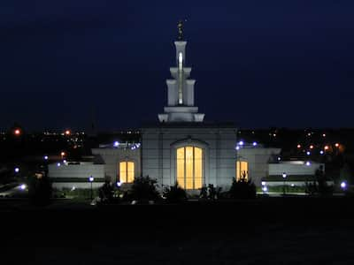

My favorite city is Richland, Washington. This city is my favorite because it is one of the areas that I served in while I was on my mission. Richland is a welcoming place, and is home to many wonderful people. Something that sets Richland apart from many other cities is that children going outside and playing with each other is still commonplace. Richland also borders the beautiful Columbia River, and is home to the Columbia River Temple.
In many ways, Richland feels like a "blast from the past." During World War II, part of the Manhattan Project took place at the Hanford site in Richland. The Hanford site was the place where the Manhattan Project's atomic bombs were built. As a result, much of the housing in Richland was constructed in the '40s and '50s. The people of Richland are very proud of their history, as exemplified by Richland High School's mascot: The Richland Bombers.